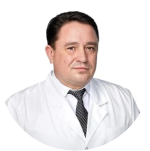
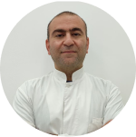
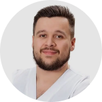

|

|
Болоцков Александр Сергеевич
Заведующий кафедры ультразвуковой диагностики,
преподаватель
Cтаж 28 лет
Врач ультразвуковой диагностики высшей категории, кандидат медицинских наук. Заведующий
отделением УЗД ЧУЗ "Клиническая больница 'РЖД-Медицина'", главный внештатный специалист по УЗД
Северокавказской Дирекции здравоохранения "РЖД-Медицина".
Печатные работы, статьи, патенты и научных
публикации врача - 60шт.
-
Белоусов И.И., Коган М.И., Болоцков А.С.,
Паленый А.И. Патент на изобретение № 2428932
от 20.09.2011 - «Способ дифференциальной
диагностики воспалительной и невоспалительной
форм хронического абактериального простатита».
-
Сидоренко Ю.С., Шевченко А.Н.,Медведев В.Л.,
Болоцков А.С., Максимова Н.А. Патент на
изобретение №2488352 от 27.07.2013 «Способ
дифференциальной диагностики патологии
предстательной железы»
-
Волков А.А., Петричко М.И., Духин А.Р.,
Болоцков А.С., Будник Н.В. Патент на
изобретение №2489093 «Способ лечения
доброкачественной гиперплазии предстательной
железы»
-
Хитарьян А.Г., Дульеров К.А., Болоцков А.С.,
Ковалев С.А. Патент на изобретение № 2559148
«Способ прогнозирования эффективности лечения
при тазовом пролапсе»
-
Хитарьян А.Г., Алибеков А.З., Сайдуллаев Х.М.,
Болоцков А.С., Глумов Е.Э. Патент на
изобретение №2634298 от 24.10.2017 «Способ
интраоперационного определения границ резекции
кишечника при его перфорации»
-
Болоцков А.С., Гурцкой Р.А., Гурцкая М.Н.,
Курасанов Е.В., Маева Е.Г., Жилина И.В.,
Маджугина Л.В. Патент на изобретение №264647
от 13.02.2018 «Способ дифференциальной
диагностики кистозных образований почек»
-
Болоцков А.С., Ильясов Б.Б. «Комплексная
ультразвуковая диагностика при локальных
формах рака предстательной железы»,--
«Променева дiагностика, променева терапiя».
г.Киев.,2\2001г.
-
Болоцков А.С., Ильясов Б.Б., Жилина И.В., с
соавт. «Эхография с ЦДК и пункционная биопсия
в диагностике узловых образований щитовидной
железы»,-- «Променева дiаностика, променева
терапiя». г.Киев.,2\2001г.
-
Ильясов Б.Б., Болоцков А.С., Каймакчи М.Ю., с
соавт. «Возможности ультразвука в диагностике
ретроперитониального фиброза (б-нь
Ормонда)»,-- «Визуализация в
клинике»,г.Москва, №6, 2002 г.
-
Ильясов Б.Б., Медведев В.Л., Болоцков А.С.
ТРУЗИ с УЗА в диагностике рака предстательной
железы // 4-й Съезд Российской Ассоциации
специалистов ультразвуковой диагностики в
медицине: тез. докл., 27-30 октября 2003г. –
Москва, 2003. – С. – 176.
-
Ильясов Б.Б., Медведев В.Л., Болоцков А.С.
ТРУЗИ с УЗА в диагностике рака предстательной
железы // Актуальные проблемы деятельности
диагностических центров в современных
условиях: материалы ежегодной конференции
ДиаМА 29 сентября - 3 октября 2003г. –
Санкт-Петербург, 2003. – С. 66-67.
-
Болоцков А.С., Ильясов Б.Б., Никитин С.В.
Комплексное ультразвуковое исследование в
диагностике заболеваний семенных пузырьков.
//Научные достижения – практике: сборник
научных работ, посвященных 15-летию кафедры
функциональной диагностики и интраскопии
Ставропольской государственной медицинской
академии. – Ставрополь, 2005. – С.136 - 143.
-
Болоцков А.С., Ильясов Б.Б., Никитин С.В.
Комплексное ультразвуковое исследование в
диагностике заболеваний семенных пузырьков.
//Современные диагностические и лечебные
технологии. Сборник статей к 10-летию
областного консультативно-диагностического
центра. – Ростов-на-Дону, 2005г. – С. 265-269.
-
Ильясов Б.Б., Болоцков А.С., Никитин С.В.
Эхосемиотика очаговых и диффузных поражений
семенных пузырьков при комплексном
трансректальном исследовании //Актуальные
проблемы деятельности диагностических центров
в современных условиях: материалы ежегодной
конференции ДиаМА, 27-30 сентября 2005г. –
Тула, 2005. – С. 101-103.
-
Болоцков А.С., Медведев В.Л., Ильясов Б.Б.
Прогностическая ценность комплексного ТРУЗИ в
оценке степени инвазии рака простаты в капсулу
железы// Ультразвуковая и функциональная
диагностика. Сборник тезисов III Съезда врачей
ультразвуковой диагностики ЮФО.– 2006. – №6. –
С. 99.
-
Болоцков А.С., Никитин С.В. Ультразвуковая
эхосемиотика очаговых и диффузных заболеваний
семенных пузырьков // Ультразвуковая и
функциональная диагностика. Сборник тезисов
III Съезда врачей ультразвуковой диагностики
ЮФО. – 2006. – №6. – С. 99-100
-
Болоцков А.С., Ильясов Б.Б.. Никитин С.В.,
Рыжик Р.В. Прогностическая ценность
комплексного трансректального ультразвукового
исследования в стадировании локальных форм
рака предстательной железы. //Актуальные
проблемы деятельности
консультативно-диагностических центров:
материалы ежегодной конференции ДиаМА, 25-28
сентября 2007г. – Москва, 2007. – С. 143 -
144.
-
Болоцков А.С., Ильясов Б.Б.. Никитин С.В.,
Рыжик Р.В. Прогностическая ценность
комплексного трансректального ультразвукового
исследования в стадировании локальных форм
рака предстательной железы. //Ультразвуковая и
функциональная диагностика. Сборник тезисов V
Съезда Российской ассоциации специалистов
ультразвуковой диагностики в медицине. – 2007.
– №4. – С.169.
-
Болоцков А.С., Ильясов Б.Б., Рыжик Р.В.
Прогностическая ценность комплексного
трансректального ультразвукового исследования
в стадировании локальных форм рака
предстательной железы: материалы 19
международного конгресса «Евросон 2007» –
Лейпциг, 2007. – С.100-101.
-
Болоцков А.С., Ильясов Б.Б., Рыжик Р.В.
Трансректальный ультразвук: проблемы
«невизуализируемого» рака предстательной
железы. //Актуальные проблемы деятельности
консультативно-диагностических центров:
материалы ежегодной конференции ДиаМА, 22-26
сентября 2009г. – Минск, 2009. – № XI. –
С.102-103.
-
Болоцков А.С., Ильясов Б.Б. ТРУЗИ: проблемные
аспекты диагностики локальных форм рака
простаты //Медицинская визуализация. – 2009. –
С.20 – 22.
-
Коган М.И., Белоусов И.И., Болоцков А.С.
Артериальный кровоток в простате при синдроме
хронической тазовой боли / хроническом
простатите //Урология «Медицина» – 2011г. – №
3. – С. 22 – 28.
-
Кит О.И., Шевченко А.Н., Болоцков А.С.
Трансректальный ультразвук: актуальные вопросы
диагностики локальных форм рака предстательной
железы // Вестник медицинского
стоматологического института . – 2011. – № 4.
– С. 40-43.
-
Болоцков А.С., Будник Н.В., Тетерникова Е.Н.,
Волков А.А. Прогностическая ценность ТРУЗИ в
оценке инвазии опухоли в капсулу
предстательной железы // Ультразвуковая и
функциональная диагностика. Тезисы VI съезда
РАСУДМ. – 2011. – №5. – С. 55
-
Болоцков А.С., Будник Н.В., Маджугина Л.В.,
Волков А.А. ТРУЗИ: актуальные вопросы
диагностики локальных форм рака предстательной
железы // Ультразвуковая и функциональная
диагностика. Тезисы VI съезда РАСУДМ. – 2011.
– №5. – С. 56
-
Кит О.И., Шевченко А.Н., Болоцков А.С.,
Максимова Н.А. Возможности трансректального
ультразвука в ранней диагностике локальных
форм рака предстательной железы // Современные
проблемы науки и образования. – 2012. – № 2;
URL: http://www.science-education.ru/102-5948
(дата обращения: 10.04.2012).
-
Гурцкой Р.А, Болоцков А.С., Маджугин М.Л.
Применение контрастного препарата «Соновью»
при резекции малых опухолей почек. Сборник
тезисов Междисциплинарной научно-практической
конференции с международным участием «Новые
технологии в диагностике и лечении
урологических заболеваний» .Москва. 2016.
-
Болоцков А.С., Курасанов Е.В., Жилина И.В.,
Арабаджан М.С. Возможности эластографии
сдвиговой волной в диагностике рецидивного
рака молочных желез. /Ультразвуковая и
функциональная диагностика. Москва. - 4.2016.-
с.87.
-
Маджугин М.Л., Болоцков А.С., Гурцкой Р.А.
Применение контрастно-усиленного ультразвука
при резекции почек./ Ультразвуковая и
функциональная диагностика. Москва. 4.2016.
стр. 104-105.
-
Болоцков А.С., Маджугин М.Л. Возможности
прогноза выраженного интраоперационного
кровотечения при проведении ТУР-простаты с
помощью предоперационного ТРУЗИ./ Медицинская
визуализация. Москва. Том 21, №5 12.2017.
с.108-112.
-
Болоцков А.С., Ильясов Б.Б. «Комплексная
ультразвуковая диагностика при локальных
формах рака предстательной железы»,--
«Променева дiагностика, променева терапiя».
г.Киев.,2\2001г.
-
Болоцков А.С., Ильясов Б.Б., Жилина И.В., с
соавт. «Эхография с ЦДК и пункционная биопсия
в диагностике узловых образований щитовидной
железы»,-- «Променева дiаностика, променева
терапiя». г.Киев.,2\2001г.
-
Ильясов Б.Б., Болоцков А.С., Каймакчи М.Ю., с
соавт. «Возможности ультразвука в диагностике
ретроперитониального фиброза (б-нь
Ормонда)»,-- «Визуализация в
клинике»,г.Москва, №6, 2002 г.
-
Ильясов Б.Б., Медведев В.Л., Болоцков А.С.
ТРУЗИ с УЗА в диагностике рака предстательной
железы // 4-й Съезд Российской Ассоциации
специалистов ультразвуковой диагностики в
медицине: тез. докл., 27-30 октября 2003г. –
Москва, 2003. – С. – 176.
-
Ильясов Б.Б., Медведев В.Л., Болоцков А.С.
ТРУЗИ с УЗА в диагностике рака предстательной
железы // Актуальные проблемы деятельности
диагностических центров в современных
условиях: материалы ежегодной конференции
ДиаМА 29 сентября - 3 октября 2003г. –
Санкт-Петербург, 2003. – С. 66-67.
-
Болоцков А.С., Ильясов Б.Б., Никитин С.В.
Комплексное ультразвуковое исследование в
диагностике заболеваний семенных пузырьков.
//Научные достижения – практике: сборник
научных работ, посвященных 15-летию кафедры
функциональной диагностики и интраскопии
Ставропольской государственной медицинской
академии. – Ставрополь, 2005. – С.136 - 143.
-
Болоцков А.С., Ильясов Б.Б., Никитин С.В.
Комплексное ультразвуковое исследование в
диагностике заболеваний семенных пузырьков.
//Современные диагностические и лечебные
технологии. Сборник статей к 10-летию
областного консультативно-диагностического
центра. – Ростов-на-Дону, 2005г. – С. 265-269.
-
Ильясов Б.Б., Болоцков А.С., Никитин С.В.
Эхосемиотика очаговых и диффузных поражений
семенных пузырьков при комплексном
трансректальном исследовании //Актуальные
проблемы деятельности диагностических центров
в современных условиях: материалы ежегодной
конференции ДиаМА, 27-30 сентября 2005г. –
Тула, 2005. – С. 101-103.
-
Болоцков А.С., Медведев В.Л., Ильясов Б.Б.
Прогностическая ценность комплексного ТРУЗИ в
оценке степени инвазии рака простаты в капсулу
железы// Ультразвуковая и функциональная
диагностика. Сборник тезисов III Съезда врачей
ультразвуковой диагностики ЮФО.– 2006. – №6. –
С. 99.
-
Болоцков А.С., Никитин С.В. Ультразвуковая
эхосемиотика очаговых и диффузных заболеваний
семенных пузырьков // Ультразвуковая и
функциональная диагностика. Сборник тезисов
III Съезда врачей ультразвуковой диагностики
ЮФО. – 2006. – №6. – С. 99-100
-
Болоцков А.С., Ильясов Б.Б.. Никитин С.В.,
Рыжик Р.В. Прогностическая ценность
комплексного трансректального ультразвукового
исследования в стадировании локальных форм
рака предстательной железы. //Актуальные
проблемы деятельности
консультативно-диагностических центров:
материалы ежегодной конференции ДиаМА, 25-28
сентября 2007г. – Москва, 2007. – С. 143 -
144.
-
Болоцков А.С., Ильясов Б.Б.. Никитин С.В.,
Рыжик Р.В. Прогностическая ценность
комплексного трансректального ультразвукового
исследования в стадировании локальных форм
рака предстательной железы. //Ультразвуковая и
функциональная диагностика. Сборник тезисов V
Съезда Российской ассоциации специалистов
ультразвуковой диагностики в медицине. – 2007.
– №4. – С.169.
-
Болоцков А.С., Ильясов Б.Б., Рыжик Р.В.
Прогностическая ценность комплексного
трансректального ультразвукового исследования
в стадировании локальных форм рака
предстательной железы: материалы 19
международного конгресса «Евросон 2007» –
Лейпциг, 2007. – С.100-101.
-
Болоцков А.С., Ильясов Б.Б., Рыжик Р.В.
Трансректальный ультразвук: проблемы
«невизуализируемого» рака предстательной
железы. //Актуальные проблемы деятельности
консультативно-диагностических центров:
материалы ежегодной конференции ДиаМА, 22-26
сентября 2009г. – Минск, 2009. – № XI. –
С.102-103.
-
Болоцков А.С., Ильясов Б.Б. ТРУЗИ: проблемные
аспекты диагностики локальных форм рака
простаты //Медицинская визуализация. – 2009. –
С.20 – 22.
-
Коган М.И., Белоусов И.И., Болоцков А.С.
Артериальный кровоток в простате при синдроме
хронической тазовой боли / хроническом
простатите //Урология «Медицина» – 2011г. – №
3. – С. 22 – 28.
-
Кит О.И., Шевченко А.Н., Болоцков А.С.
Трансректальный ультразвук: актуальные вопросы
диагностики локальных форм рака предстательной
железы // Вестник медицинского
стоматологического института . – 2011. – № 4.
– С. 40-43.
-
Болоцков А.С., Будник Н.В., Тетерникова Е.Н.,
Волков А.А. Прогностическая ценность ТРУЗИ в
оценке инвазии опухоли в капсулу
предстательной железы // Ультразвуковая и
функциональная диагностика. Тезисы VI съезда
РАСУДМ. – 2011. – №5. – С. 55
-
Болоцков А.С., Будник Н.В., Маджугина Л.В.,
Волков А.А. ТРУЗИ: актуальные вопросы
диагностики локальных форм рака предстательной
железы // Ультразвуковая и функциональная
диагностика. Тезисы VI съезда РАСУДМ. – 2011.
– №5. – С. 56
-
Кит О.И., Шевченко А.Н., Болоцков А.С.,
Максимова Н.А. Возможности трансректального
ультразвука в ранней диагностике локальных
форм рака предстательной железы // Современные
проблемы науки и образования. – 2012. – № 2;
URL: http://www.science-education.ru/102-5948
(дата обращения: 10.04.2012).
-
Гурцкой Р.А, Болоцков А.С., Маджугин М.Л.
Применение контрастного препарата «Соновью»
при резекции малых опухолей почек. Сборник
тезисов Междисциплинарной научно-практической
конференции с международным участием «Новые
технологии в диагностике и лечении
урологических заболеваний» .Москва. 2016.
-
Болоцков А.С., Курасанов Е.В., Жилина И.В.,
Арабаджан М.С. Возможности эластографии
сдвиговой волной в диагностике рецидивного
рака молочных желез. /Ультразвуковая и
функциональная диагностика. Москва. - 4.2016.-
с.87.
-
Маджугин М.Л., Болоцков А.С., Гурцкой Р.А.
Применение контрастно-усиленного ультразвука
при резекции почек./ Ультразвуковая и
функциональная диагностика. Москва. 4.2016.
стр. 104-105.
-
Болоцков А.С., Маджугин М.Л. Возможности
прогноза выраженного интраоперационного
кровотечения при проведении ТУР-простаты с
помощью предоперационного ТРУЗИ./ Медицинская
визуализация. Москва. Том 21, №5 12.2017.
с.108-112.
-
Белоусов И.И., Коган М.И., Болоцков А.С.,
Паленый А.И. Патент на изобретение № 2428932
от 20.09.2011 - «Способ дифференциальной
диагностики воспалительной и невоспалительной
форм хронического абактериального простатита».
-
Сидоренко Ю.С., Шевченко А.Н.,Медведев В.Л.,
Болоцков А.С., Максимова Н.А. Патент на
изобретение №2488352 от 27.07.2013 «Способ
дифференциальной диагностики патологии
предстательной железы».
-
Волков А.А., Петричко М.И., Духин А.Р.,
Болоцков А.С., Будник Н.В. Патент на
изобретение №2489093 «Способ лечения
доброкачественной гиперплазии предстательной
железы».
-
Хитарьян А.Г., Дульеров К.А., Болоцков А.С.,
Ковалев С.А. Патент на изобретение № 2559148
«Способ прогнозирования эффективности лечения
при тазовом пролапсе».
-
Хитарьян А.Г., Алибеков А.З., Сайдуллаев Х.М.,
Болоцков А.С., Глумов Е.Э. Патент на
изобретение №2634298 от 24.10.2017 «Способ
интраоперационного определения границ резекции
кишечника при его перфорации».
-
Болоцков А.С., Гурцкой Р.А., Гурцкая М.Н.,
Курасанов Е.В., Маева Е.Г., Жилина И.В.,
Маджугина Л.В. Патент на изобретение №264647
от 13.02.2018 «Способ дифференциальной
диагностики кистозных образований почек».
|
|

|
Дадаян Арсен рудольфович
Главврач клиники Медскиллс, преподаватель
Стаж 17 лет
Врач ультразвуковой диагностики, врач-хирург высшей квалификационной категории.
Специализируется на ультразвуковой диагностики заболеваний органов пищеварительной системы,
оперативные вмешательства под контролем ультразвука.
Печатные работы, статьи, патенты и научных
публикации врача - 32шт.
-
Характеристика микробных маркеров желчи у
больных острым биллиарным панкреатитом в
сочетании с холангитом Белик Б.М., Тенчурин
Р.Ш., Дадаян А.Р. Стр. 132 Первый сьезд
хирургов ЦФО РФ г. Рязань 2017 г. «Альманах»
№2 от 2017 г.
-
Выбор лечебной тактики у больных острым
деструктивным панкреатитом с синдромом
внутрибрюшной гипертензии Белик Б.М., Тенчурин
Р.Ш., Дадаян А.Р. Стр. 98 Первый сьезд
хирургов ЦФО РФ г. Рязань 2017 г. «Альманах»
№2 от 2017 г.
-
Ранние декомпрессионные вмешательства на
забрюшинной клетчатке и брюшной стенке у
больных тяжелым острым панкреатитом с
синдромом внутрибрюшной гипертензии Белик
Б.М., Тенчурин Р.Ш., Дадаян А.Р. Стр. 220-222
V съезд хирургов ЮГА России с международным
участием 2017 г. «Медицинский вестник» №2 от
2017 г.
-
Выбор оптимальных сроков выполнения
холецистэктомии у больных острым билиарным
панкреатитом Белик Б.М., Родаков А.В.,
Тенчурин Р.Ш., Абдурагимов З.А., Дадаян А.Р.
Стр. 1789-1790 Журнал института хирургии им
А.В. Вишневского «Альманах» №1 от 2017 г.
-
Способ лапароскопического дренирования
забрюшинной клетчатки при тяжелом остром
панкреатите Белик Б.М., Тенчурин Р.Ш, Дадаян
А.Р., Абдуррагимов З.А. Патент на изобретение
№ RU -2674242 С1. Дата регистрации 5.12.2018
г.
-
The role of abdominal compartment syndrome And
enteric insufficiency syndrome regarding Of
progression of infectious complications Heavy
forms of acute pancreatitis B. Belik, G.
Chirkinyan, D. Mareev, R. Tenchurin, M.
Oskanian, A. Dadayan S.25 Abstracts of Papers
Submitted to the IASGO World Congress.
September 9-12, 2018, Moscow, Russia. Surgery,
Gastroenterology and Oncology
-
Внутрибрюшная гипертензия и синдром кишечной
недостаточности как предикторы развития ранних
органных дисфункций и инфекционных осложнений
при панкреонекрозе Белик Б.М., Чиркинян Г.М.,
Тенчурин Р.Ш., , Мареев Д.В., Осканян М.А.,
Дударев И.В., Дадаян А.Р., Маслов А.И. Стр.
46-47 Журнал «Инфекции в хирургии» том 16
№1-2, 2018 г.
-
Внутрибрюшная гипертензия и синдром кишечной
недостаточности как предикторы развития ранних
органных дисфункций и инфекционных осложнений
при панкреонекрозе Белик Б.М., Чиркинян Г.М.,
Тенчурин Р.Ш., Мареев Д.В., Осканян М.А.,
Дударев И.В., Дадаян А.Р., Маслов А.И. Стр.
250-251 Журнал института хирургии им А.В.
Вишневского «Альманах» №1, 2018 г.
-
Возможности применения минимально инвазивных
хирургических Вмешательств в лечении
панкреонекроза Белик Б.М., Тенчурин Р.Ш.,
Дадаян А.Р., Абдурагимов З.А., Мареев Д.В.,
Осканян М.А., Маслов А.И., Родаков А.В.,
Чиркинян Г.М. Стр. 71-73 Материалы выездного
Пленума Российского общества хирургов и XIX
съезда хирургов Дагестана, г. Махачкала 6-7
июня 2019 г. Журнал «Вестник Дагестанской
медицинской академии» №2(31). 2019 г.
-
Выбор методов декомпрессии и санации
желчевыводящих и панкреатических путей у
больных острым билиарным панкреатитом Белик
Б.М., Коробка В.Л., Толстопятов С.В.,
Абдурагимов З.А., Тодоров С.С., Тенчурин Р.Ш.,
Родаков А.В., Усаткин А.А., Погосян Л.М.,
Дадаян А.Р., Чиркинян Г.М. Стр. 75-77
Материалы выездного Пленума Российского
общества хирургов и XIX съезда хирургов
Дагестана, г. Махачкала 6-7 июня 2019 г.
Журнал «Вестник Дагестанской медицинской
академии» №2(31). 2019 г.
-
Использование малоинвазивных хирургических
технологий в лечении панкреонекроза Б.М.
Белик, Р.Ш. Тенчурин, А.Р. Дадаян, З.А.
Абдурагимов, Д.В. Мареев, А.И. Маслов, А.В.
Родаков, Г.М. Чиркинян, М.А. Осканян Материалы
научно-практической конференции: Вектор
развития высоких медицинских технологий на
госпитальном этапе оказания скорой и
неотложной медицинской помощи Рязань, 18–19
апреля 2019 года
-
Минимально инвазивные методы лечения
панкреонекроза Б.М. Белик, Р.Ш. Тенчурин, А.Р.
Дадаян, З.А. Абдурагимов, Д.В. Мареев, А.И.
Маслов, А.В. Родаков, Г.М. Чиркинян, М.А.
Осканян Стр. 57-58 Вестник хирургической
гастроэнтерологии 2019 г.
-
Оптимизация диагностики и тактики лечения
острого билиарного панкреатита Б.М. Белик,
Р.Ш. Тенчурин, А.Р. Дадаян, З.А. Абдурагимов,
А.В. Родаков, С.С. Тодоров, А.А. Усаткин, К.Г.
Пясецкий, Л.М. Погосян, Л.В. Турищева Стр.
58-60 Вестник хирургической гастроэнтерологии
2019 г.
-
Пути совершенствования алгоритма диагностики и
тактики лечения острого билиарного панкреатита
Б.М. Белик, Р.Ш. Тенчурин, А.Р. Дадаян, З.А.
Абдурагимов, А.В. Родаков, С.С. Тодоров, А.А.
Усаткин, К.Г. Пясецкий, Л.М. Погосян, Л.В.
Турищева Стр. 158-160 Тезисы VI съезда
хирургов Юга России с международным участием.
4-5 октября 2019 г. Ростов-на-Дону.
«Медицинский вестник Юга России» Том 10,
№3/2019 г.
-
Роль лапароскопической декомпрессии
забрюшинной клетчатки в профилактике
инфицирования панкреонекроза Белик Б.М.,
Тенчурин Р.Ш., Дадаян А.Р., Абдурагимов З.А.,
Мареев Д.В., Чиркинян Г.М., Родаков А.В,
Осканян М.А. Стр. 129-130 Т е з и с ы
Общероссийского Хирургического Форума-2019
Совместно с XXII съездом Общества
эндоскопической Хирургии россии (РОЭХ им.
Академика В.Д. Федорова) Г. Москва 10-12
апреля 2019 г.
-
Выбор тактики лечения у больных тяжелым острым
панкреатитом с учетом фактора внутрибрюшной
гипертензии Белик Б.М. Чиркинян Г.М. Тенчурин
Р.Ш. Абдурагимов З.А. Мареев Д.В. Дадаян А.Р.
Осканян М.А. Сапралиев А.Р. С. 400-409. Журнал
им. Н.В.Склифосовского «Неотложная медицинская
помощь».- 2020.- Т. 9, № 3.-
-
Тактика хирургического лечения острого
билиарного панкреатита, осложненного гнойным
холангитом Белик Б.М. Абдурагимов З.А. Таранов
И.И. Тенчурин Р.Ш. Родаков А.В. Тодоров С.С.
Усаткин А.А. Маслов А.И. Дадаян А.Р. С.
654-656. Альманах Института хирургии им.
А.В.Вишневского.- 2020.- № 1: тезисы ХIII-го
съезда хирургов. Часть первая.-
-
Диагностика и лечение острого билиарного
панкреатита, осложненного гнойным холангитом
Белик Б.М. Абдурагимов З.А. Таранов И.И.
Тенчурин Р.Ш. Родаков А.В. Тодоров С.С.
Усаткин А.А. Маслов А.И. Дадаян А.Р. С. 17-19
Интраабдоминальная инфекция. Вопросы
диагностики и лечения: сб. Материалов респ.
Науч.-практ. Видеоконф. С междунар. Участием,
Минск, 20 нояб. 2020 г.
-
Новые хирургические технологии в лечении
инфицированного панкреонекроза Белик Б.М.
Тенчурин Р.Ш. Дадаян А.Р. Абдурагимов З.А.
Мареев Д.В. Осканян М.А. Маслов А.И. С. 20-22
Интраабдоминальная инфекция. Вопросы
диагностики и лечения: сб. Материалов респ.
Науч.-практ. Видеоконф. С междунар. Участием,
Минск, 20 нояб. 2020 г.
-
Хирургическая тактика при остром билиарном
панкреатите Белик Б.М. Абдугимов З.А. Тенчурин
Р.Ш. Тодоров С.С. Усаткин А.А. Дадаян А.Р.
Родаков А.В. Маслов А.И. Чиркинян Г.М.
С.80-82. Неотложная медицинская помощь 2020:
сборник материалов научно-практич.
Конференции, Москва, 16-17 июля 2020 г.-
-
Устройство для расширения хирургического
доступа Белик Б.М. Дадаян А.Р. Тенчурин Р.Ш.
Пясецкий К.Г. Чиркинян Г.М. Мареев Д.В.
Дударев И.В. Полезная модель к пат. 195088
Российская Федерация, №2019125225; Заявл.
07.08.2019; Опубл. 15.01. 2020, Бюл. № 2. –
9с.:ил.
-
Устройство для ирригации, аспирации и
деструкции тканей Белик Б.М. Дадаян А.Р.
Тенчурин Р.Ш. Мареев Д.В. Полезная модель к
пат. Российская Федерация, № 199575; Заявл.
08.06.2020; Опубл. 08.09.2020, Бюл. № 25.
-
Профилактика и лечение холангиогенного
сепсисау больных острым билиарным
панкреатитом,осложненным гнойным холангитом
Белик Б.М. Абдурагимов З.А. Родаков
А.В.Тенчурин Р.Ш. Таранов И.И.Дадаян А.Р.
Усаткин А.А. Маслов А.И. С. 49-52. НЕСТИРАЕМЫЕ
СКРИЖАЛИ: СЕПСИС ET CETERA (ВСЕРОССИЙСКАЯ
ШКОЛА)материалыxi Всероссийской
конференцииассоциации общих хирургов
ироссийской Ассоциации
специалистовхирургической инфекции (РАСХИ)с
международным участием. Под ред. Проф. А.Б.
Ларичева.- 2020.- Ярославль.
-
Возможности интервенционной радиологии в
лечении острого деструктивного панкреатита
Белик Б.М. Тенчурин Р.Ш. Дадаян А.Р.
Абдурагимов З.А. Родаков А.В. Осканян
М.А.Чиркинян Г.М. Мареев Д.В. Маслов А.И. С.
111-112. 5-й съездврачей неотложной
медицины:Вызовы современностии неотложная
медицина(к 10-летию создания МОО НПО ВНМИ
НАУЧНО-ПРАКТИЧЕСКОГО ЖУРНАЛА им. Н.В.
СКЛИФОСОВСКОГО«НЕОТЛОЖНАЯ МЕДИЦИНСКАЯ
ПОМОЩЬ»).- 2021: Материалы съезда. Труды
института, Т 248.-
-
Чресфистульная ретроперитонеоскопия с
инструментальной секвестрнекрэктомией при
гнойно-деструктивных осложнениях тяжёлого
острого панкреатита Белик Б.М. Абдурагимов
З.А. Родаков А.В.Тенчурин Р.Ш. Дадаян А.Р.
Усаткин А.А. Мареев Д.В. Чиркинян Г.М. 29 с.
VII СЪЕЗД ХИРУРГОВ ЮГА РОССИИ с международным
участием.- 2021.- № 2: тезисы VII -го съезда
хирургов Юга России.-
-
Применение методов интервенционной радиологии
в лечении тяжелого острого панкреатиа Белик
Б.М. Тенчурин Р.Ш Дадаян А.Р. Абдурагимов З.А.
Родаков А.В. Осканян М.А. Чиркинян Г.М. Мареев
Д.В. С. 176. С. 15-18. Декабрьские чтения по
неотложной хирургии: Сборник научных трудов
МИНИСТЕРСТВО ЗДРАВООХРАНЕНИЯ РЕСПУБЛИКИ
БЕЛАРУСЬ КОМИТЕТ ПО ЗДРАВОХРАНЕНИЮ
МИНГОРИСПОЛКОМА БЕЛОРУССКАЯ МЕДИЦИНСКАЯ
АКАДЕМИЯ ПОСЛЕДИПЛОМНОГО ОБРАЗОВАНИЯ
БЕЛОРУССКИЙ ГОСДАСТВЕННЫЙ МЕДИЦИНСКИЙ
УНИВЕРСИТЕТ ГОРОДСКАЯ КЛИНИЧЕСКАЯ БОЛЬНИЦА
СКОРОЙ МЕДИЦИНСКОЙ ПОМОЩИ Г. МИНСКА, Том 10,
Республика Беларусь, г. Минск, Декабрьские
чтения по неотложной хирургии. Т. 10.: Сб.
Научн. Трудов Под ред. С.И. Третьяка, И.М.
Ладутько – Мн.: белмапо, 2021.
-
Диагностика и принципы лечения спонтанных
гематом мягких тканей у пациентов с новой
коронавирусной инфекцией COVID-19 Белик Б.М.
Тенчурин Р.Ш. Дадаян А.Р. С. – 172-174
Альманах Института хирургии имени А.В.
Вишневского: Сборник тезисов XIV-го Cъезда
хирургов. - №1. - 2022. – Москва.
-
Сравнительная оценка различных методик
перкутанной холецистостомии у больных с острым
обтурационным холециститом Б.М. Белик А.Р.
Дадаян З.А. Абдурагимов С.Ю. Ефанов А.В.
Родаков И.Е. Толстов С.С. Кещян О.В. Баев С -
9 Инновации и перспективные Разработки в
хирургической Гастроэнтерологии. - Материалы
4-го Cъезда общероссийской организации
«Российское общество хирургов
гастроэнтерологов» (приурочен к 100-летию НИИ
СП им. Н.В. Склифосовского). - 9–10 ноября
2023 года. – Москва.
-
Применение методов интервенционной радиологии
в лечении больных С механической желтухой Б.М.
Белик А.Р. Дадаян Р.Ш. Тенчурин З.А.
Абдурагимов В.В. Скорляков В.Ф. Бабиев А.С.
Болоцков С - 11 Инновации и перспективные
Разработки в хирургической Гастроэнтерологии.
- Материалы 4-го Cъезда общероссийской
организации «Российское общество хирургов
гастроэнтерологов» (приурочен к 100-летию НИИ
СП им. Н.В. Склифосовского). - 9–10 ноября
2023 года. – Москва.
-
Дифференцированный подход к лечению острого
билиарного панкреатита с использованием
мининвазивных хирургических вмешательств Белик
Б.М. Абдурагимов З.А. Усаткина А.А. Родаков
А.В. Тенчурин Р.Ш. Тодоров С.С. Усаткин А.А.
Дадаян А.Р. Чиркинян Г.М. С. - 20-24
МИНИСТЕРСТВО ЗДРАВООХРАНЕНИЯ РЕСПУБЛИКИ
БЕЛАРУСЬ БЕЛОРУССКАЯ МЕДИЦИНСКАЯ АКАДЕМИЯ
ПОСЛЕДИПЛОМНОГО ОБРАЗОВАНИЯ БЕЛОРУССКИЙ
ГОСУДАРСТВЕННЫЙ МЕДИЦИНСКИЙ УНИВЕРСИТЕТ
ГОРОДСКАЯ КЛИНИЧЕСКАЯ БОЛЬНИЦА СКОРОЙ
МЕДИЦИНСКОЙ ПОМОЩИ Г. МИНСКА. - Декабрьские
чтения По неотложной хирургии. - Минск, Бел
МАПО 2022. - Том 11. - Сборник научных трудов.
-
-
Ретроспективный анализ тактических ошибок при
лечении острого билиарного панкреатита Белик
Б.М. Абдурагимов З.А. Родаков А.В. Тенчурин
Р.Ш. Усаткин А.А. Дадаян А.Р. С. - 24-28
МИНИСТЕРСТВО ЗДРАВООХРАНЕНИЯ РЕСПУБЛИКИ
БЕЛАРУСЬ БЕЛОРУССКАЯ МЕДИЦИНСКАЯ АКАДЕМИЯ
ПОСЛЕДИПЛОМНОГО ОБРАЗОВАНИЯ БЕЛОРУССКИЙ
ГОСУДАРСТВЕННЫЙ МЕДИЦИНСКИЙ УНИВЕРСИТЕТ
ГОРОДСКАЯ КЛИНИЧЕСКАЯ БОЛЬНИЦА СКОРОЙ
МЕДИЦИНСКОЙ ПОМОЩИ Г. МИНСКА. - Декабрьские
чтения По неотложной хирургии. - Минск, Бел
МАПО 2022. - Том 11. - Сборник научных трудов.
-
-
Оценка эффективности применения
интраоперационного ультразвукового контроля
при удалении инородных тел мягких тканей у
пациентов с минно- взрывными осколочными
ранениями Белик Б.М. Дадаян А.Р. Тенчурин Р.Ш.
Ефанов С.Ю. Скорляков В.В. Бабиев В.Ф.
Болоцков А.С. Родаков А.В. Толстов И.Е. Кещян
С.С. Шабаршин С.А. Баев О.В. С 29-33. 6-й
Международный научно- практический конгресс
«РАНЫ И РАНЕВЫЕ ИНФЕКЦИИ»с конференцией
«Проблемы анестезии и интенсивной терапии
раневых инфекций» 21-23 ноября 2023 года.
Москва.
|
|

|
Фирсов Максим Сергеевич
Преподаватель
Стаж 12 лет
Врач ультразвуковой диагностики высшей квалификационной категории. Заведующий отделением УЗД ЧУЗ "КБ 'РЖД-Медицина' г. Батайск".
Печатные работы, статьи, патенты и научных
публикации врача - 27шт.
-
Механизмы обеспечения микробицидности
лейкоцитов при острой боли Печатная 64-я
Итоговая научная конференция молодых ученых
Ростовского государственного медицинского
университета, посвященная 95-летию высшего
медицинского образования на Дону и 80-летию
РостГМУ. Г. Ростов-на-Дону 2010г. Стр. 337-338
Алексеева Н.С. Алексеев В.В. Йадав Р. Фирсов
М.С.
-
Эпидемиологическая ситуация по лихорадке
западного Нила на территории Ростовской
области в 2010 году. Печатная Материалы VI
научно-практической конференции молодых ученых
«Завадские чтения» ГОУ ВПО РостГМУ г.
Ростов-на-Дону 2011г. Стр. 102-103 Логвин Ф.В.
Тютюнькова Н.Г. Бакузова Д.В. Фирсов М.С.
-
ВИЧ-инфекция в ростовской области среди
доноров Печатная 65-я Итоговая научная
конференция молодых учёных Ростовского
государственного медицинского университета
Ростов-на-Дону: ГОУ ВПО РостГМУ
Минздравсоцразвития России, 2011. Стр. 76-77
Мороз Н.В. Логвин Ф.В Бакузова Д.В. Фирсов
М.С.
-
Оценка частоты выявления пациентов высокого
риска по таблице SCORE в общей терапевтической
практике Печатная 66-я Итоговая научная
конференция молодых учёных Ростовского
государственного медицинского университета/
Материалы конференции – Ростов-на-Дону.: ГБОУ
ВПО РостГМУ Минздравсоцразвития России, 2012.
Стр. 184-185 Бликян К.М. Кушаева М.М.
Муталиева Х.Х. Фирсов М.С.
-
О профилактике послеоперационного перитонита
Печатная 67-я Итоговая научная конференция
молодых учёных Ростовского государственного
медицинского университета с международным
участием/ Материалы конференции –
Ростов-на-Дону.: ГБОУ ВПО РостГМУ Минздрава
России, 2013. Стр. 458-459 Фирсов М.С.
-
Клинико-экспериментальное обоснование
офтальмологического исследования в диагностике
форм и тяжести течения дивертикулярной болезни
Печатная Научно-практический медицинский
журнал № 2 2014(апрель–июнь) Медицинский
вестник Юга России Учредитель ГБОУ ВПО РостГМУ
Минздравсоцразвития России Стр. 113-117 Юсеф
Р.М. Кулжинская Г.И. Татьянченко В.К. Воронова
О.В. Фирсов М.С.
-
Результаты использования различных способов
защиты толсто-толстокишечных анастомозов
Печатная Бюллетень Северного государственного
медицинского университета –
Архангельск.-2014.-вып.XXXII Стр. 22-23
Богданов В.Л. Татьянченко В.К. Фирсов М.С.
-
Новые технологии лечения мегадолихоколон
Печатная Российский журнал гастроэнтерологии,
гепатологии и колопроктологии-2014.-№5 Стр.
138 Татьянченко.В.К. Андреев Е.В. Богданов
В.Л. Фирсов М.С.
-
О способах профилактики несостоятельности
толстокишечного анастомоза Печатная Вестник
Российской военно-медицинской
Академии-2014.-№2-вып.46 Стр. 384-385
Татьянченко В.К., Богданов В.Л., Фирсов М.С.
-
Клинико-экспериментальное обоснование
офтальмологического исследованияв диагностике
форм и тяжести течения дивертикулярной болезни
Печатная Медицинский вестник Юга России. 2014.
№ 2. Стр. 113-117 Юсеф Р.М., Кулжинская Г.И.,
Татьянченко В.К., Воронова О.В., Фирсов М.С.
-
Результаты использования различных способов
защиты толсто-толстокишечного анастомоза
Печатная Бюллетень Северного государственного
медицинского университета. 2014. № 1 (32).
Стр. 22-23.
-
Оценка результатов лечения абсцесса
эпителиального копчикового хода Печатная
Инфекции в хирургии. 2014. Т. 12. № 3. Стр.
29-30 Богданов В.Л., Татьянченко В.К.,
Овсянников А.В., Фролкин В.И., Фирсов М.С.
-
Способ лечения острого тканевого
гипертензионного синдрома при флегмонах
околоушно-жевательной области Патент Патент на
изобретение RU 2554326 C1, 27.06.2015. Заявка
№ 2014120834/14 от 22.05.2014. Татьянченко
В.К., Серпионов С.Ю., Максюков С.Ю., Фирсов
М.С.
-
Способ лечения флегмон околоушно-жевательной
области Патент Патент на изобретение RU
2557414 C1, 20.07.2015. Заявка № 2014125576/14
от 24.06.2014. Татьянченко В.К., Серпионов
С.Ю., Нерсесянц Т.С., Богданов В.Л., Фирсов
М.С.
-
Клиническая, топографическая анатомия и
оперативная хирургия Учебное пособие
Ростовский государственный медицинский
университет (Ростов-на-Дону) УДК:
611.9+616-089(075.9) 348 Татьянченко В.К.,
Овсянников А.В., Хоронько Ю.В., Сухая Ю.В.,
Богданов В.Л., Воронова О.В., Ковалев Б.В.,
Фирсов М.С., Красенков Ю.В.
-
Обоснование тактики хирургического лечения
межмышечных абсцессов и флегмон разной
локализации Печатная В сборнике: Фокус на
первичное звено здравоохранения: современные
клинические рекомендации по профилактике и
лечению заболеваний в
амбулаторно-поликлинической практике. Х
Юбилейная конференция врачей общей практики
(семейных врачей) юга россии. 2015. Стр.
252-257 Татьянченко В.К., Давыденко А.В.,
Нерсесянц Т.С., Красенков Ю.В., Серпионов
С.Ю., Фирсов М.С.
-
Новые технологии диагностики и лечения острого
тканевого гипертензионного синдрома при
гнойных процессах мягких тканей Печатная В
сборнике: Неделя науки 2015. Материалы
всероссийского молодёжного форума с
международным участием. 2015. Стр. 80-81
Красенков Ю.В., Фирсов М.С., Богданов В.Л.
-
О тактике лечения больных с флегмонами
околоушно-жевательной области Печатная
Медицинский вестник Юга России. 2015. № 4.
Стр. 85-88. Серпионов С.Ю., Максюков С.Ю.,
Татьянченко В.К., Нерсесянц Т.С., Фирсов М.С.,
Красенков Ю.В.
-
Особенности клинического течения и тактики
лечения глубоких межмышечных флегмон ягодичной
области и нижних конечностей Печатная 2-я
итоговая научная сессия молодых учёных
РостГМУ: сборник материалов, 4 июля 2015 г.,
Ростов-на-Дону / ГБОУ ВПО РостГМУ Минздрава
России; Молодёжное научное общество. – Ростов
н/Д: Изд-во РостГМУ, 2015. – 180 с. Стр. 118
Фирсов М.С., Богданов В.Л., Воронова О.В.
-
Способ выбора тактики лечения острого
тканевого гипертензионного синдрома при
флегмоне ягодичной области Патент Патент на
изобретение RU 2581821 C1, 20.04.2016. Заявка
№ 2015116170/14 от 29.04.2015 Татьянченко
В.К., Фирсов М.С., Давыденко А.В.
-
Способ профилактики гипертрофических рубцов
при лечении флегмон мягких тканей Патент
Патент на изобретение RU 2587972 C1,
27.06.2016. Заявка № 2015112990/14 от
08.04.2015. Татьянченко В.К., Красенков Ю.В.,
Фирсов М.С., Богданов В.Л., Давыденко А.В.
-
Морфо-функциональные изменения артериального
русла толстой кишки при экспериментальном
дивертикулезе Печатная Колопроктология. 2016.
№ S1 (55). Материалы Всероссийского Съезда
колопроктологов с международным участием
"Оперативная и консервативная колопроктология:
современные технологии для высокого качества
жизни пациента" и Объединенного Каспийского и
Байкальского форума по проблемам ВЗК. 25-27
августа 2016 г. г. Астрахань Стр. 103-104
Татьянченко В.К., Богданов В.Л., Фирсов М.С.,
Ковалёв Б.В.
-
Особенности ятрогенных травм вегетативной
иннервации органов малого таза Печатная
Колопроктология. 2016. № S1 (55). Материалы
Всероссийского Съезда колопроктологов с
международным участием "Оперативная и
консервативная колопроктология: современные
технологии для высокого качества жизни
пациента" и Объединенного Каспийского и
Байкальского форума по проблемам ВЗК. 25-27
августа 2016 г. г. Астрахань Стр. 44
Татьянченко В.К., Сухая Ю.В., Воронова О.В.,
Фирсов М.С.
-
Критерии оценки течения поднижнечелюстной и
подподбородочных флегмон (дно полости рта)
Печатная 4-я итоговая научная сессия молодых
учёных РостГМУ: сборник материалов, 1 июня
2017 г., Ростов-наДону / ГБОУ ВПО РостГМУ
Минздрава России; Молодёжное научное общество.
– Ростов н/Д: Изд-во РостГМУ, 2017. – 203 с
Стр. 78-79 Степанов Д.А., Фирсов М.С., Линник
Д.А., Богданов В.Л.
-
Хирургическая тактика лечения пациентов с
одиночной «фолликулярной опухолью» щитовидной
железы Печатная 4-я итоговая научная сессия
молодых учёных РостГМУ: сборник материалов, 1
июня 2017 г., Ростов-наДону / ГБОУ ВПО РостГМУ
Минздрава России; Молодёжное научное общество.
– Ростов н/Д: Изд-во РостГМУ, 2017. – 203 с
Стр. 138-141 Бликян К.М., Бойко И.А., Фирсов
М.С.
-
Особенности лечения Нейродистрофической
кокцигодинии Печатная Колопроктология. 2017
№S3 (61) Материалы Всероссийской
научно-практической конференции с
международным участием "Актуальные вопросы
колопроктологии" 26-28 октября 2017 г., г.
ВОРОНЕЖ Стр. 41-42 Татьянченко В.К., Богданов
В.Л., Фирсов М.С., Красенков Ю.В.,
-
Тактика лечения больных с флегмонами мягких
тканей разной локализации с учетом оценки
стадии развития внутритканевого
гипертензионного синдрома Печатная Журнал
МедиАль. 2017. № 2 (20). Стр. 21-24
Татьянченко В.К., Давыденко А.В., Богданов
В.Л., Красенков Ю.В., Фирсов М.С., Степанов
Д.А.
|


'%3e%3cpath fill-rule='evenodd' clip-rule='evenodd' d='M.395 19.925a.252.252 0 0 0 .243.067l4.986-1.308a9.863 9.863 0 0 0 4.616 1.15c5.423 0 9.836-4.412 9.838-9.835A9.776 9.776 0 0 0 17.2 3.042 9.778 9.778 0 0 0 10.24.157C4.817.157.404 4.57.402 9.992a9.835 9.835 0 0 0 1.261 4.825L.331 19.682a.253.253 0 0 0 .064.243zm15.48-15.562a7.913 7.913 0 0 0-5.633-2.335c-4.394 0-7.968 3.572-7.97 7.964 0 1.505.42 2.97 1.218 4.238l.19.302-.805 2.939 3.015-.79.292.172a7.952 7.952 0 0 0 4.055 1.11h.003c4.391 0 7.965-3.573 7.967-7.965 0-2.128-.827-4.13-2.332-5.635zm-8.57 1.21c.17.006.36.014.539.413.125.278.338.802.503 1.211.117.287.21.518.235.567.06.12.1.26.02.42a9.181 9.181 0 0 0-.034.068c-.06.122-.104.212-.206.331l-.125.15c-.082.1-.163.199-.234.27-.12.12-.245.25-.105.488.14.24.62 1.024 1.332 1.659.765.681 1.43.97 1.767 1.116l.16.072c.239.12.379.1.518-.06.14-.16.6-.699.759-.938.16-.24.32-.2.539-.12.22.08 1.397.659 1.637.779l.133.065c.166.08.277.134.326.214.06.1.06.58-.14 1.139-.2.56-1.178 1.098-1.617 1.138l-.127.014c-.406.048-.918.108-2.747-.613-2.25-.887-3.734-3.086-4.04-3.54a2.547 2.547 0 0 0-.051-.075l-.002-.002c-.126-.168-.976-1.302-.976-2.475 0-1.103.541-1.68.791-1.947a6.05 6.05 0 0 0 .047-.05c.22-.24.48-.3.639-.3h.034c.148 0 .295 0 .425.005z' fill='white'/%3e%3c/g%3e%3cdefs%3e%3cclipPath id='a'%3e%3cpath fill='white' d='M0 0h20v20H0z'/%3e%3c/clipPath%3e%3c/defs%3e%3c/svg%3e)
{kind=link}
{kind=link}
{kind=link}
{kind=link}
{kind=link}
{kind=link}
{kind=link}
{kind=link}
{kind=link}
{kind=link}
{kind=link}
{kind=link}
{kind=link}
{kind=link}
{kind=link}
{kind=link}
{kind=link}
{kind=link}
{kind=link}
{kind=link}
{kind=link}
{kind=link}
{kind=link}
{kind=link}
{kind=link}
{kind=link}
{kind=link}
{kind=link}
{kind=link}
{kind=link}
{kind=link}
{kind=link}
{kind=link}
{kind=link}
{kind=link}
{kind=link}
{kind=link}
{kind=link}
{kind=link}
{kind=link}
{kind=link}
{kind=link}
{kind=link}
{kind=link}
{kind=link}
{kind=link}
{kind=link}
{kind=link}
{kind=link}
{kind=link}
{kind=link}
{kind=link}
Социальные сети для врачей УЗИ
Добрый день, уважаемые коллеги!
Приглашаем Вас присоединиться в наш Телеграмм канал. Канал ведут сотрудники кафедры УЗД Академии, возглавляемой Болоцковым Александром Сергеевичем.
— Вступайте в телегармм канал
клинические разборы, экспертная поддержка, редкие клинические случаи, новые приказы Минздрава о деятельности врача УЗИ
— Вступайте в группу вк
очные стажировки, новости по аккредитации, всероссийские мероприятия для врачей УЗИ
— Подписывайтесь на наш ютуб канал
видео лекции, клинические разборы, экспертные вебинары в записи
Ждем ваши вопросы, видео петли, всегда готовы вам помочь!